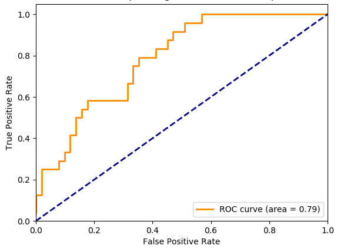

Metrics for evaluation
- What have we learned to evaluate a model so far?
- Classification accuracy rate = correct/total
- Classification: confusion matrix
- Regression: RSS (usually used only for tuning coefficients)
- What will be introduced:
- Classification: ROC
- Regression: R^2
- Regression: RMSE and MSE
- Regression: MAE
Review Classification Terms
- Based on: https://www.geeksforgeeks.org/confusion-matrix-machine-learning/
- Positive (P) : Observation is positive (for example: is an apple).
- Negative (N) : Observation is not positive (for example: is not an apple).
- True Positive (TP) : Observation is positive, and is predicted to be positive.
- False Negative (FN) : Observation is positive, but is predicted negative.
- True Negative (TN) : Observation is negative, and is predicted to be negative.
- False Positive (FP) : Observation is negative, but is predicted positive.
Metrics for Evaluation: ROC Curve
- Classification Receiver Operating Characteristic (ROC) curve
- For binary classification (True or False)
- True Positive Rate (TPR) (Sensitivity): True Positive Rate corresponds to the proportion of positive data points that are correctly considered as positive, with respect to all positive data points.
- False Positive Rate (FPR) (Specificity): False Positive Rate corresponds to the proportion of negative data points that are mistakenly considered as positive, with respect to all negative data points.
-
Based on: https://towardsdatascience.com/metrics-to-evaluate-your-machine-learning-algorithm-f10ba6e38234
-
FPR and TPR both have values in the range [0, 1]. FPR and TPR bot hare computed at threshold values such as (0.00, 0.02, 0.04, …., 1.00) and a graph is drawn. Area Under Curve (AUC) is the area under the curve of plot FPR vs TPR at different points in [0, 1]. 
-
Figure Credit: https://towardsdatascience.com/metrics-to-evaluate-your-machine-learning-algorithm-f10ba6e38234
-
The greater the value of AUC, the better is the performance of our model. Each curve is for one class. You may have multiple curves.
ROC Example
Micro Average vs Macro average in a multiclass classification problem:
- A macro-average will compute the metric independently for each class and then take the average (hence treating all classes equally)
- A micro-average will aggregate the contributions of all classes to compute the average metric.
- In a multi-class classification setup, micro-average is preferable if you suspect there might be class imbalance (i.e you may have many more examples of one class than of other classes).
- More details at: https://datascience.stackexchange.com/questions/15989/micro-average-vs-macro-average-performance-in-a-multiclass-classification-settin
Group Activity 5: ROC Curve
- Group Activity draw the graph and following these requirements:
- X data: fpr[“micro”]
- Y data: tpr[“micro”]
- X axis from 0 – 1
- Y axis from 0 – 1.5
- X label: False Positive Rate
- Y label: True Positive Rate
- Title: Receiver operating characteristic example
- Legend position: lower right
- Source Code:https://colab.research.google.com/github/ruiwu1990/CSCI_4120/blob/master/Evaluation/ROC.ipynb
| Index | Prev | Next |